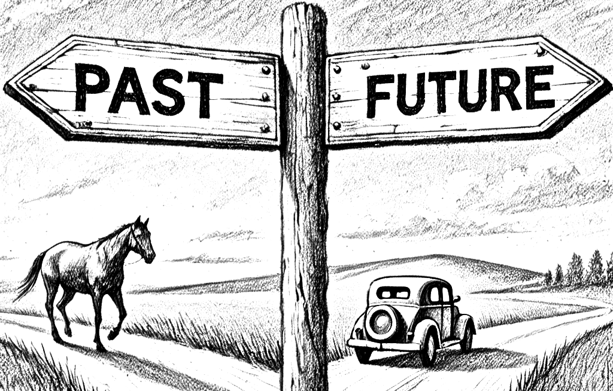
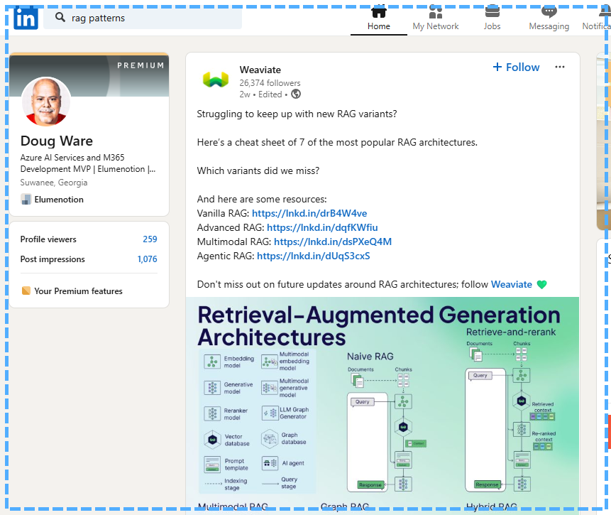
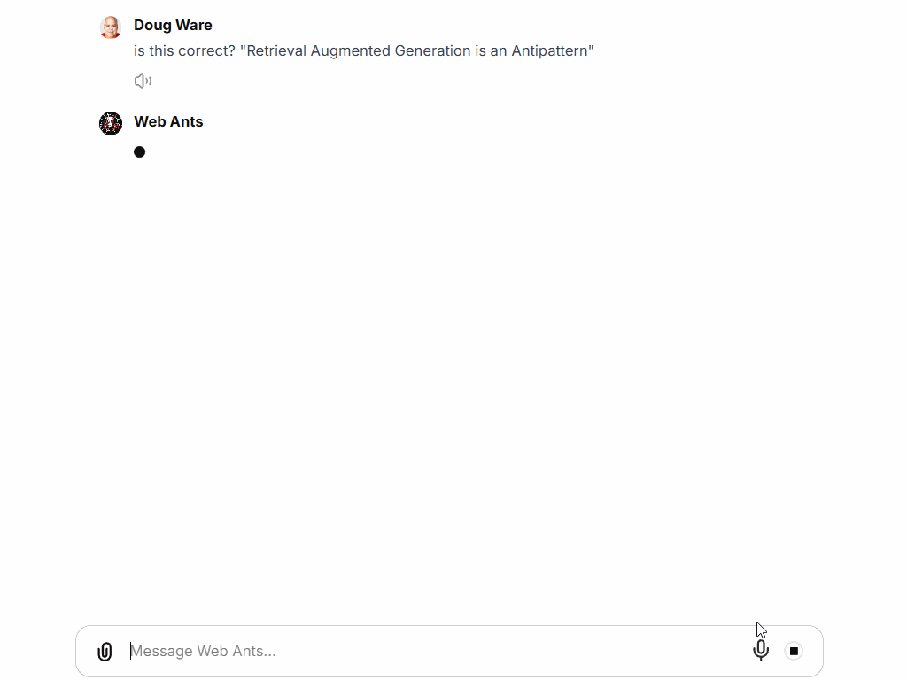
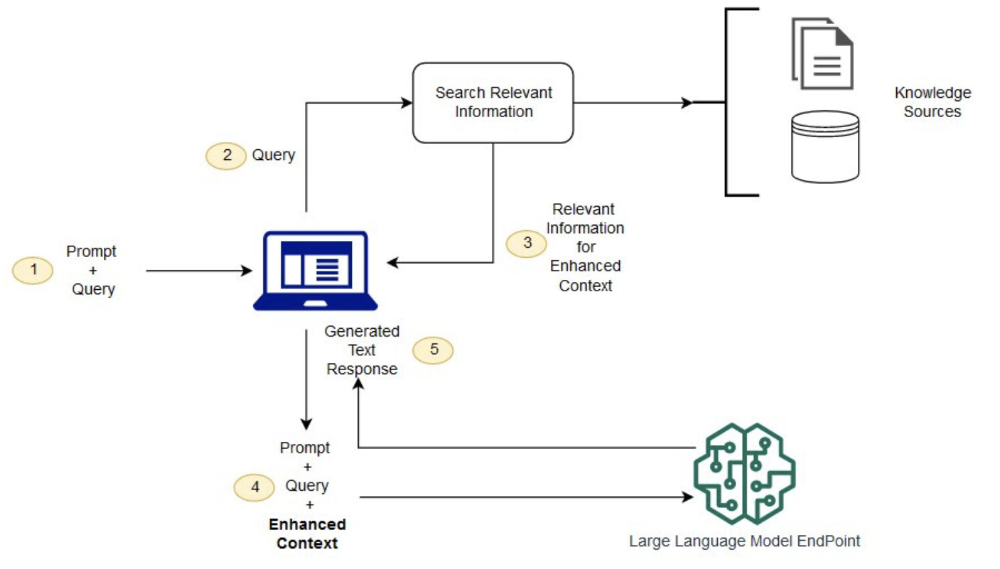
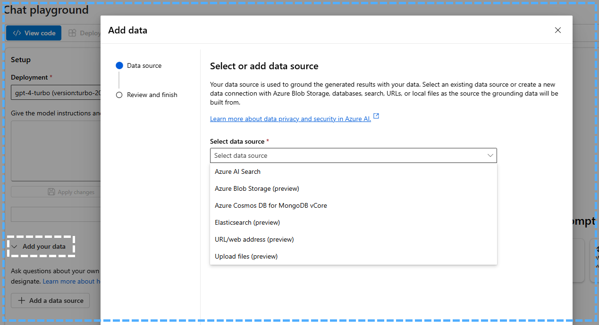
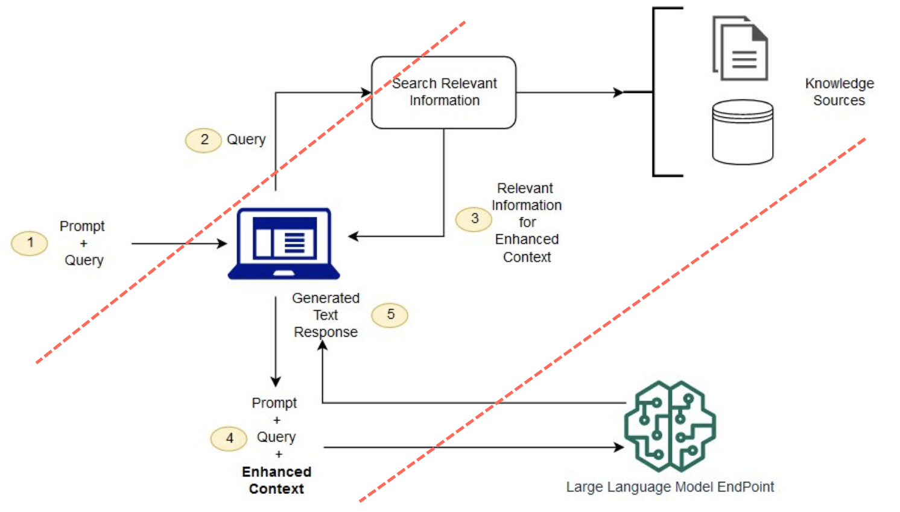
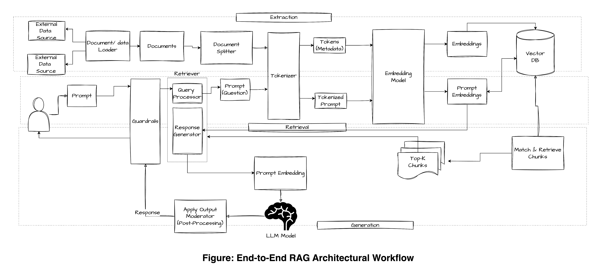

It’s 2025, don’t start your AI journey in 2022

Retrieval Augmented Generation is an Anti-pattern
It’s hard for me to believe that I started my AI/ML journey in earnest over 2.5 years ago. At the beginning my interest was in computer vision, but ChatGPT came out at the end of 2022 and turned me toward generative AI. Since then, I’ve been working successfully as a consultant and building commercial and open-source products including Go AntArmy!, AntRunner, and ask@antarmy.ai.
Educating myself and keeping up with the changes is a lot of work, but building things for my own business and for others helps give me a point of view based on first-hand experience. If you are an experienced AI software builder, you may disagree with what I am about to say. If you are new to the space, I think this is important advice: The most popular approach to chatbot and agent design, Retrieval Augmented Generation (RAG), is outmoded!
This article explains why I say this and what I think is a better alternative.
Conventional wisdom
If you search LinkedIn for ’RAG Patterns’ you will find many posts and articles telling you why it is good and how to use it with numerous variations.
Conventional wisdom

It is a popular approach for building chatbots and agents. Go AntArmy!, AntRunner, does not use this pattern in any of its agents, but the Web Ants do something similar using an alternative pattern. If I ask them is this correct? "Retrieval Augmented Generation is an Anti-pattern“, they will tell me something like: The statement "Retrieval Augmented Generation is an Anti-pattern" is not widely supported by current literature or expert consensus. Instead, Retrieval-Augmented Generation (RAG) is generally viewed as a beneficial approach in the field of natural language processing (NLP) and artificial intelligence (AI).

AntArmy.AI is integrated with M365 and is a private solution for people to run in Azure, and so there is no public demo for it yet, but anyone can use the search ants by sending an email to ask@antarmy.ai.
What is an Anti-pattern?
Wikipedia says an anti-pattern: in software engineering, project management, and business processes is a common response to a recurring problem that is usually ineffective and risks being highly counterproductive.
To be an anti-pattern then is to be a pattern that seems reasonable and is popular, and where, by implication, there are better alternatives. Sometimes we make patterns to work around challenges that later disappear or are mitigated enough that the pattern no longer fits the real world. Retrieval Augmented Generation is an example.
What is RAG?
Retrieval-Augmented Generation (RAG) is an approach in natural language processing that combines a search index(s) with a generative model(s). In RAG, a specialized embeddings model first retrieves relevant documents or pieces of information from an index based on the user's query. This retrieval process ensures that the generated responses are grounded in factual data, enhancing their relevance and accuracy.
Once the relevant information is retrieved, a generative model, creates a response using information in the retrieved content. This method allows the application to use information that the model does not contain such as anything that happened after the model was trained.
RAG is used in applications such as question answering, conversational agents, and content generation, where accurate and contextually relevant information is crucial. By combining retrieval and generation, RAG models try to produce more informed and contextually appropriate responses, and address limitations with models that rely solely on pre-trained knowledge without real-time data access.
This diagram shows the basic pattern. I didn’t make it and I don’t know who did – I’ve seen it several times and image search yields more than 20 pages going back to 2023 in different sites including the OpenAI community site!

There are many variations on this pattern (which is a symptom of the problem), but the basic pattern is:
- Retrieval happens in steps 2 and 3 using the original user query
- Augmentation happens in step 4 when the original user query is augmented or rewritten to contain the (hopefully) relevant information that was retrieved
- Generation of the response happens when the language model responds to the augmented query
There are some simple cases where this basic pattern works well, and it makes for great demos. In December of 2023 I wrote Building Good Chatbots Part One, No-Code with Microsoft Copilot Studio and Azure AI Studio. At the end of that article, I teased a following article ‘Castle on a hill’ that was to include a lot of the techniques I and others use extend the pattern, but the more I built this less comfortable I got about recommending the pattern, and by May 2024 felt that there was a better way.
If you are Monty Python fan, you’ll appreciate it when I say ‘that castle sank into the swamp’.
RAG Challenges
In the diagram retrieval is done in the box labeled Search Relevant Information with input named ‘Query’ coming from the computer icon which represents a chat application.
Searching Relevant Information
How does this Search Relevant Information process know which knowledge sources to use and how to invoke them? In simple systems there is only one, but this might be complicated. Typically, making a decision about which sources to use is simply not made and instead the process will query everything in parallel and use a ranking function to pick the winning information. If a decision is made up-front it is often done by a fast and inexpensive models, not by the LLM used for the final generation.
Why wouldn’t you use an LLM, perhaps the same one used for the final generation? This part of the pattern is an example of a solution to problems that were solved by time. The first is inference cost. For example, GPT-4o-mini is approximately 200 times cheaper than GPT-4 and prices continue to decrease while quality continues to improve. A second is scarcity. Getting enough capacity to use GPT-4 in a system typically required a commitment to spend tens of thousands of dollars pre month! Today capacity is more abundant with metered rates often with no minimums.
Backing up a step, how does the chat application know that the user asked a question that should be handled by search? In a simple implementation the usual answer is that it just doesn’t worry about it and does a search anyway. If there are no results, the chat application deals with it somehow in the augmentation step.
Knowledge Sources
A popular first project is the chatbot using a set of documents. If you use Copilot Studio or the Azure AI Foundry Chat Playground, you can get started quickly using documents you already have and deploy a new chatbot in minutes.

SharePoint Agents are another of the many options.
With high quality documents under active content management and a narrow focus, you can create useful chat agents with good quality. In this case RAG is not an anti-pattern because it fits and doesn’t require a lot of extensions. But what if the content is not curated, covers a wide variety of topics, has hand-written text, pictures, or tables, or includes important metadata on a cover page, or as a document property?
What if people need to ask questions about the overall corpus like, ‘what was the most common complaint customers made?’ Document search depends on text that is in documents. Unless there is a document with text about common complaints, a chatbot using search will not be able to answer the question because the answer is not in the text.
Multiple knowledge sources
It is very important to note that you can’t eliminate the need for knowledge sources! If you want to create an AI agent like the Web Ants or ask@antarmy.ai, you have to provide the correct knowledge to the LLM for everything to work. The question is what patterns you use to build the agent.
A temptation is to try to create a single knowledge source that works for every scenario, but this is only practical when you have narrow requirements that everyone agrees on with high quality data, so basically never.
Go AntArmy! solves this challenge by using many agent ants with specific and narrow definitions, each with their own knowledge sources and tools. The pattern is very different from RAG, but many of the same pieces are required. However, they are organized differently.
Augmentation introduces fragility
Step 4 is the creation of an ‘enhanced prompt’. At this point the chat application takes the original question, adds the knowledge, and in the case of the Azure AI Foundry ‘Add your data’ extensions (among others), adds instructions concerning citations.
Depending on the implementation, this new prompt might be very different, or even at odds with the user or system prompt. I encountered this when I had a knowledge source that consisted of questions, answers, and links to source documents that contained the official answers. Using the ‘Add your data’ extensions, it proved very difficult to get output that included the specific links from the answers in the Q&A documents instead of citing the Q&A documents themselves.
We wanted it to use the links in the content, but the creators of that specific RAG implementation assumed that citations to the indexed documents were desirable. The resulting augmented prompt overrode the instructions about the links.
A big flaw comes from the fact that the pattern explicitly separates the LLM from the true context and relies on an intermediary which frequently uses less capable or overly specialized models or instructions.

This intermediary is another element that made sense previously due to the constraints imposed by the size of the context window. In 2022, gpt-3.5-turbo had a context window size of 4096 tokens compared to 128,000 tokens with gpt-4o. So, when implementing RAG with gpt-3.5-turbo, managing the size of the context widow was much harder as today we have almost 32 times as much space to work with.
This means we can:
- Put more facts in the prompt
- Provide more instructions for dealing with different knowledge sources
- Have longer threads
- Do more ‘thinking’
Much of the augmentation and context management done by the chat application with RAG can now be managed by the LLM which has a large enough context window to ‘see’ and participate in the entire flow.
Bigger picture RAG pattern
I looked at a lot of articles about RAG as I was putting this article together and I was impressed by the completeness of this one from Hevo Data - What is RAG Architecture? A Complete Guide | Hevo.

This diagram includes the ingestion pipeline to the vector database which is only one kind of knowledge source. Often there are easier, better, and more direct ways to provide the LLM with knowledge.
Agents with tools are easier to build and can do more things
Cheaper and better models with large context windows allow us to use the LLM to manage generation and greatly simplify the architecture by giving it the entire context and allowing it to manage retrieval and any other tools it needs to fulfill its purpose. The use of knowledge sources becomes just like any other thing the agent knows how to do.
Thanks for reading
This article is the preface for what I expect to be a long series articles about building AI agents with tools like the Go AntArmy! ants, using the AntRunner library, using the assistants api and Azure OpenAI. A big focus will be on how to define tools for existing APIs of your own and from vendors using examples like MSGraph and local functions.
A big focus of the architecture is the ability to use the resulting agents in other products, for examples, as Copilot Declarative Agents, and in fully custom systems or jobs such as ask@antarmy.ai.
Happy New Year!
--Doug Ware